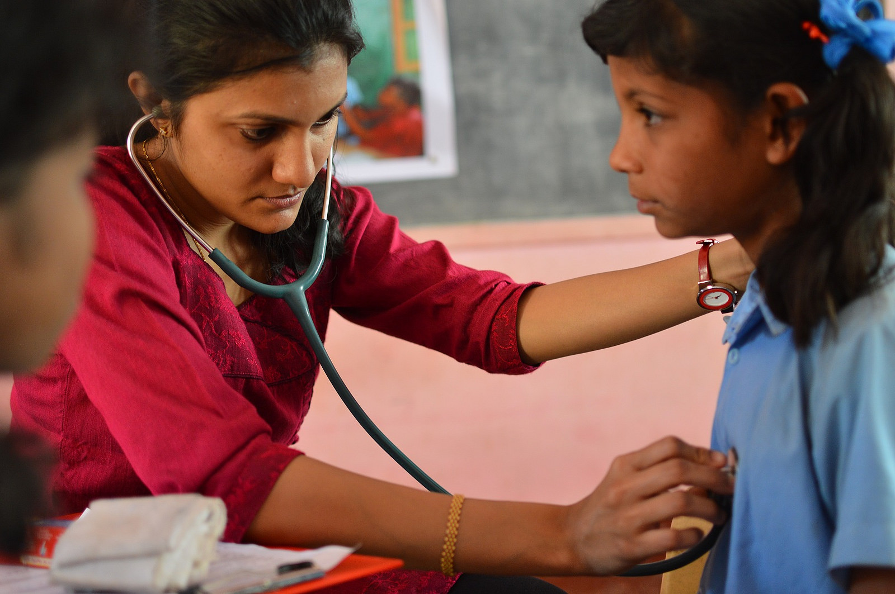

.jpg)
|
|
|
““A child must know that he is a miracle, that since
the beginning of the world there hasn’t been, and until the
end of the world there will not be, another child like him.”
~ Pablo Casals
To vprovide them places to liveChild Care Foundation is a fully registered , non-profit Organization, affiliated to Child Rights Information Network (CRIN), The International Society for Mobile Youth Work ( ISMO ), and Peace Child International . CCF was formed in November 2006 in light of the fact that over 10million children and adolescents in Uganda grow up in families struggling to survive on less than $1 a day Child Care Foundation is a fully registered , non-profit Organization, affiliated to Child Rights Information Network (CRIN), The International Society for Mobile Youth Work ( ISMO ), and Peace Child International . CCF was formed in November 2006 in light of the fact that over 10million children and adolescents in Uganda grow up in families struggling to survive on less than $1 a day |
“Let’s all unite to create a better world without
compromising the next generation. ”
|  |
To combact Health CrisisThe various areas of healthcare system delivery addressed by CARE India’s projects include improving the quality of services for maternal and reproductive health, child health and nutrition, and early identification and treatment of communicable diseases such Tuberculosis (TB), Kala Azar, pneumonia, diarrhea and HIV. To increase the uptake of services, besides the supply-side interventions, many projects work with communities and groups of mothers to break social barriers by engaging men and other key decision makers in rural households. The aim of the health interventions is to strengthen and promote comprehensive health for women and girls, and create a positive and enabling environment for accessing quality healthcare services. |